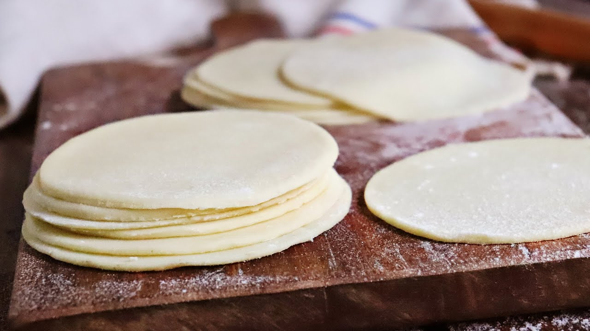

Empanada Dough

Description
Making empanada dough from scratch allows
you to create perfectly flaky and tender empanadas.
This dough is versatile and can be
used for both savory and sweet fillings.
Ingredients
- 3 cups all-purpose flour
- 1/2 teaspoon salt
- 1/2 cup unsalted butter, chilled and cubed
- 1 egg
- 1/2 cup cold water
- 1 tablespoon white vinegar
Steps
- In a large bowl, combine the flour and salt.
- Add the chilled, cubed butter to the flour mixture. Using a pastry cutter or your fingers, work the butter into the flour until the mixture resembles coarse crumbs.
- In a small bowl, whisk together the egg, cold water, and vinegar.
- Gradually add the wet ingredients to the flour mixture, stirring until the dough begins to come together.
- Turn the dough out onto a floured surface and knead gently until smooth. Be careful not to overwork the dough.
- Divide the dough into two balls, flatten each slightly, and wrap in plastic wrap.
- Refrigerate for at least 1 hour before using.
- When ready to use, roll out the dough on a floured surface to about 1/8 inch thickness. Cut into circles using a round cutter (about 4-5 inches in diameter).
- Fill with your desired filling, fold, and crimp the edges to seal.